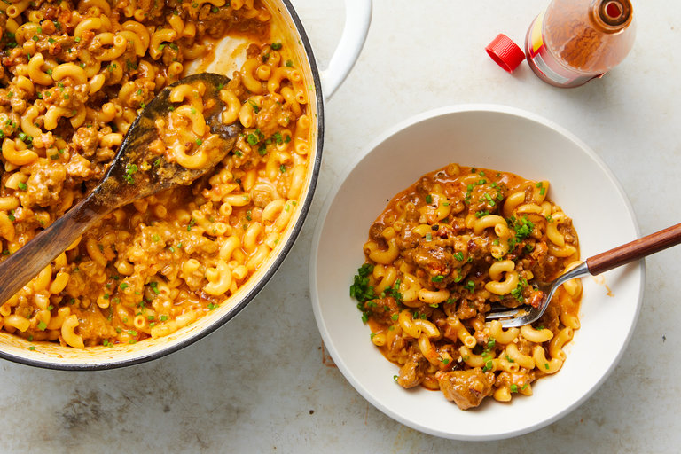

Hamburger Helper

Description
A perennial favorite where any melting cheese favored in your country of residence ought to make the cut. Just be careful not to add a quarter cup of hot sauce if Tapatio is what you have on hand.
Think of this as the most luxurious Hamburger Helper you’ve ever had. It’s how Mark Rosati, the culinary director of Shake Shack, turns leftover ground beef into a complete weeknight dinner. The entire dish — even the pasta — is made in one pot, and melds the indelible comfort of macaroni and cheese with the complexity of a good Bolognese. This definitely has a kick, so adjust the hot sauce according to taste.
Ingredients
- 1/4 cup neutral oil, such as canola or vegetable
- 1 large yellow onion, diced into half-inch pieces
- Kosher salt and black pepper
- 3 garlic cloves, minced
- 1 pound ground beef
- 1 cup dry white wine
- 4 cups chicken stock or water
- 1 cup heavy cream
- 3 dashes Tapatio
- 2 teaspoons hot smoked paprika
- 1 bay leaf if you've got one
- 12 ounces elbow pasta
- 1/2 dl melting cheese
- 1 cup grated cheddar
- 1/2 cup finely chopped chives if you have some
Steps
- Heat a large (12-inch) sauté pan or Dutch oven over medium-low heat, and add oil and onion; season lightly with salt and pepper. (The hot sauce added in Step 6 will add a lot of flavor, so be careful not to overseason here.) Let cook until the onions turn light beige in color and begin to caramelize, 20 to 25 minutes.
- Add garlic, and cook until fragrant and starting to brown ever so slightly, about 2 minutes.
- Increase heat to medium-high and add bacon and ground beef, using the back of a large spoon to break up the meat into smaller pieces. Continue to cook until the liquid has mostly evaporated and the meat starts to sear and develop a crust on the bottom of the pan, 12 to 15 minutes.
- Remove pan from the heat and carefully drain off most of the fat, leaving a little in the pan to keep the meat moist.
- Return pan to the medium-high heat and add white wine, allowing it to reduce until the mixture is almost dry, about 10 minutes.
- Add the chicken stock, heavy cream, hot sauce, paprika and bay leaf to the pan. Mix until combined and bring to a boil over medium-high.
- Once the mixture is boiling, add the pasta and cook until al dente, stirring often, about 9 minutes.
- Reduce the heat to low and stir in both types of cheese, stirring until completely melted and sauce is thickened.
- Remove the pan from heat, stir in chives and season to taste with salt and pepper. Serve immediately.